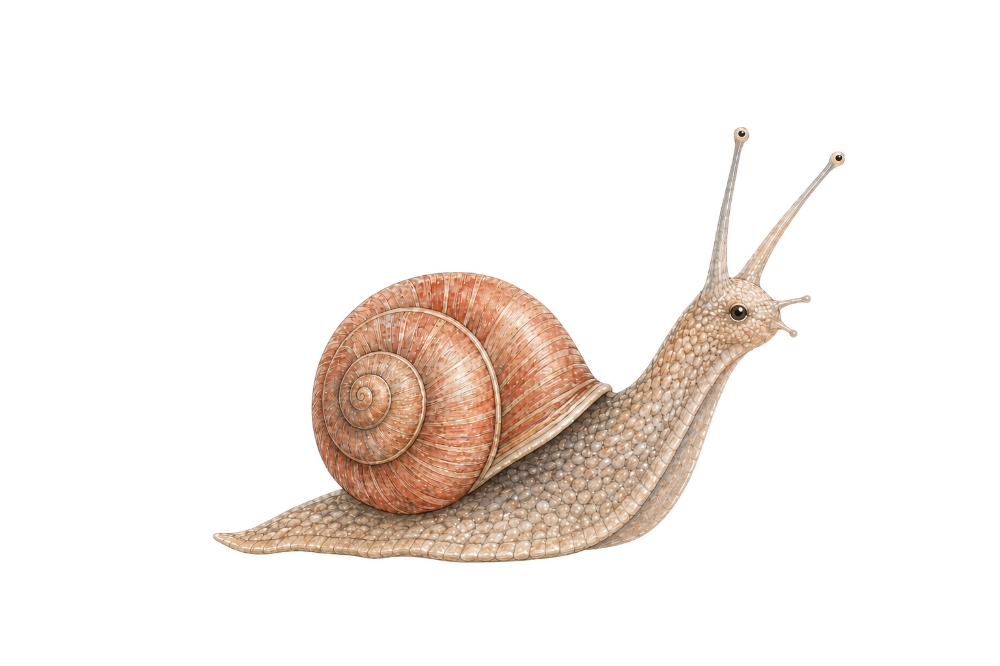

说出需求或不适
可以谈目标、卡点、阅读体验、情绪、节奏，也可以直接说“这个文件不好用”或“我想换一种学法”。
你只需说清想学什么、哪里卡住、哪里用得不顺。Agent 会读取你的状态，按需改造文件、生成工具和展现形式，再把反馈变成下一次更顺手的起点。

宪法管规则，账本管证据，序言管理由。
本系统没有强制力，也不该有。agent 可以被说服松绑，文件可以被改写。诚实地说，学生始终拥有 root 权限，正如没有人能强迫你走进健身房。
它存在的原因，只是一个学生小小的祈求：让一个疲惫的人，在怀疑自己的时候仍然有些可信的东西，比如过去自己规定并执行的规则。
机器在其中只负责两件事：降价与留痕。降价，是把"开始"缩到最小：下一步在上一次结束时就已写好，最难的日子里，可以只是坚持五分钟，甚至只是抬起一根手指。留痕，是把"你的行为产生了结果"变成每天可查的账。合同由学生每天重新签：续约，或走进仪式修改条款。
所以自律在这里不是人格特质，更不是一种难以跨越的神经结构缺陷。它只是：今天，做不做那个已经被缩到很小的动作。系统从不要求你成为自律的人，它只是让"做"变得容易，再让账本记住你已经做过多少次，以此向你证明，一个人有变得更好的可能。Fable 对此的概括我很喜欢：账本空着的日子，靠结构性的善意垫底，账本厚起来之后，信任自己发工资。
这套系统优化的不是任务吞吐，而是人的状态。以往的效率工具假设操作者状态恒定、无限耐心、从不自我怀疑；这套系统的每一页都假设操作者会疲惫、会想放弃、上周刚被一道困难的证明题羞辱过。这样做假设并非出于悲观，而是出于一个简单的相信：状态是能力的母体。状态差的人只能勉强完成别人布置的旧题；状态好的人不仅掌握得更快，还会开始问出自己以前问不出的问题。而一旦开始发问，就启动了正反馈的循环。
在这个时代，AI 变得无所不能，不被需要的焦虑，就像一片乌云出现在人们心中的地平线。但是，即使机器集群不再需要你、不再需要大部分个体创造价值，我们人，选择去做，也只是因为自己想做。我们可以前进到任何一步，也可以随时停止，因为我们想。
现在，让我们再试一次。
yours sincerely, mikp from t2ac
以表内列出的权威文件或目录入口为准——本表是视图，不是第二真相源。
| 目录 | 这里放什么 | 权威文件 |
|---|---|---|
main/00_core/ | 宪法依赖的领域模型、memory、changelog、problemlog | main/t2ag.md |
main/10_student/ | 当前学生档案、学习路径、活动与 Engagement | main/t2ag.md |
main/20_teacher/ | 教师模板与当前 overlay | main/t2ag.md |
main/30_group/ | 培养方案、课程组、日历、复盘和 bindings | main/t2ag.md |
main/40_course/ | 课程、进度、同级 Lesson/Exercise 活动、教材、题目与证据 | main/t2ag.md |
main/50_playbook/ | 可执行流程与维护规则 | main/50_playbook/_README.md |
main/60_journal/ | 只追加历史、施工报告与归档原文 | main/60_journal/INDEX.md |
main/70_tools/ | doctor、状态刷新、迁移、索引与派生工具 | main/70_tools/_README.md |
main/80_interface/ | 皮肤、欢迎文本与界面资产 | main/80_interface/README.md |
main/bin/ | T2AG 命令入口 | main/t2ag.md |
cloud/ | 本地和云端（手机/网页版）之间的桥接文件——提示词、同步状态、交接件。 | cloud/README.md |
文件只是可改造的器具。系统的价值是把学生的需求迅速变成可试用的改变，再让有效改变留下来，减少以后重复说明和重复忍受。
可以谈目标、卡点、阅读体验、情绪、节奏，也可以直接说“这个文件不好用”或“我想换一种学法”。
Agent 可以换一种或加一种展现形式，修改课程文件，生成图、交互页、小工具、检查脚本或技能原型。
学生不必先设计完整方案，只需使用后说明哪里更顺、哪里仍烦、哪里误解，Agent 据此继续调整。
一次性产物留在 lesson；稳定偏好写入学生档案；成熟流程才固化为 playbook 或 tool。不好用的改变可以撤回。
反馈不会只停在对话里。课程内偏好进入 course_reflections.md，跨课程稳定偏好进入 profile.md，解题方式进入 reasoning_patterns.md，重复流程按门槛进入 50_playbook/，确定性检查进入 70_tools/。学生始终拥有修改、拒绝和撤回这些文件的 root 权限。
第一次使用只需要回答少量问题。系统会把空白结构变成你的学生档案、课程入口和下一步行动；以后回来时，不必重新解释自己和学习进度。
flowchart TD
A(["打开目标实例"])
B["doctor + state refresh --check"]
C{"首次启动判据成立？"}
D["日常接管：进入图 1"]
E["逐项确认身份、时间、目标、基础与偏好"]
F["写 profile；可选项写未提供"]
G["确认首门 Course 与首个 Group"]
H["建立 progress、首个 Lesson 或 Exercise 与 teacher 映射"]
I["state refresh --write + --check"]
J{"doctor 为 0 FAIL？"}
K["修复状态，不开新内容"]
L["读取 active skin；显示 welcome_msg + art_file + 版本"]
M(["进入图 1"])
A --> L
L --> B
B --> C
C -- "否" --> D
C -- "是" --> E
E --> F
F --> G
G --> H
H --> I
I --> J
J -- "否" --> K
J -- "是" --> M
你拿到的是一个极简的基础安装包。把它复制为自己的 t2ag 文件夹，在 AI 环境中打开并发送“T2AG”，然后回答昵称、课程、教材、当前进度和学习偏好。确认信息后，你会看到自己的档案与课程生成、欢迎信息出现，并得到一条可以直接开始的下一步。此后文件会随着使用和反馈继续变化，最终成为更贴近你习惯的个人学习系统。
按问题告诉系统你是谁、要学什么、用什么教材、学到哪里和怎样学更舒服。系统复述确认后再创建内容，不替你猜测。
main/50_playbook/first_run.md直接说“继续学某门课”即可恢复课程、教材位置、未解决问题和复测内容。新的课程、技能、工具与偏好仍可随时继续加入。
main/50_playbook/lesson_recover.md读取很容易，真正决定系统是否可靠的是结课写回。
flowchart TD
A(["学生要求继续课程"])
B["doctor + state refresh --check"]
C{"有 FAIL？"}
D["修复状态，不开新内容"]
E["生成一次 L0：逐字摘录状态、教学契约及当前题面/必要教材窗口"]
F["同一原始字节缓存校验 ProgressSnapshot、活动与教师路由"]
G{"current_activity"}
H["Lesson L1：只追加 L0 尚未包含的当前活动证据"]
I["Exercise L1：当前题已有直接证据才追加 Attempt/Review"]
J["L2 仅由冲突、复测、排期、历史追问或结课触发"]
K["正课循环：见图 1b"]
L{"结课类型"}
M["共同强制事务：progress + 当前活动主载体 + 真实台账"]
N{"完整结课？"}
O["按真实触发补 reflections / reasoning / Group review"]
P["state refresh --write + --check"]
Q["完整 doctor；重读写入目标"]
R(["会话闭合"])
A --> B
B --> C
C -- "是" --> D
C -- "否" --> E
E --> F
F --> G
G -- "lesson" --> H
G -- "exercise" --> I
H --> J
I --> J
J --> K
K --> L
L -- "Micro" --> M
L -- "完整" --> M
M --> N
N -- "否" --> P
N -- "是" --> O
O --> P
P --> Q
Q --> R
FAIL 先修；skeleton 的首次启动提示和 lite 的无 Git 提示可以保留。
python main/70_tools/t2ag_doctor.py读 memory、学生档案、当前课程组与课程进度。每课的 progress.md 是进度唯一真相源。
00_core/t2ag_memory.md · 10_student/profile/profile.md · 30_group/ · 40_course/*/progress.md课程覆盖题、活跃错题和陈年反刍按 2 + 8 + 1 上限抽取；同一知识点用不同题面验证。
50_playbook/mistake_retest.md · mistake_bank.md教材课先读当前原文；工作区使用可读路径，不凭模型记忆跳页。学生随时可以要求换一种或增加一种展现形式。
lessonNN/working_pages/source_excerpt.md · lessonNN.md更新真相源、收割知识点错误、写学生档案、刷新 memory、处理工作页、输出写入确认。
50_playbook/session_close.mddoctor 回到 0 FAIL。Git 只在已有授权时按明确路径提交，网络失败不阻塞结课。
50_playbook/t2ag_flow.md · remediation_governance.md九张流程图覆盖教学、权威链、周期、皮肤、Git、整改与习题证据。
flowchart TD
A["复用未失效的 L0；解析唯一 current_activity"]
B{"活动类型"}
C["Lesson：复用 L0 必要教材窗口；L1 只追加当前证据"]
D["Exercise：复用 L0 当前题面；L1 只追加直接证据"]
E["复杂讲解先给目录/树形地图；再推进一个可确认分支"]
F["学生复述、举例或作答"]
G{"出现什么？"}
H["疑问：当场回答"]
I{"当前能闭合？"}
J["写 question bank，保留回收节点"]
K["习题：四级提示梯"]
L{"独立完成？"}
M["提示 → 指定资料 → 完整讲解"]
N["按当前活动保留真实作答；必要时进入 mistake"]
O["状态信号：调节节奏，不降低标准"]
P{"学生确认继续？"}
Q(["进入结课"])
A --> B
B -- "lesson" --> C
B -- "exercise" --> D
C --> E
D --> E
E --> F
F --> G
G -- "疑问" --> H
H --> I
I -- "否" --> J
I -- "是" --> P
J --> P
G -- "习题" --> K
K --> L
L -- "否" --> M
L -- "是" --> P
M --> N
N --> P
G -- "状态变化" --> O
O --> P
P -- "是" --> A
P -- "否" --> Q
course.md ─────────────── 课程内容、教材与教学约束
progress.md ───────────── 当前课程进度唯一真相源
│
└─ state_refresh ──→ memory / learning_path / Group view（GENERATED 缓存）
profile ───────────────── 学生稳定参数与偏好
Group plan/calendar ───── 容量、时间与结组阈值
Group review ──────────── 组合层证据
teacher overlay ───────── 课程到教师模板的当前映射
当前 Lesson / Exercise ─→ question / mistake ─→ reasoning pattern（达到证据门槛后）
activity_map ───────────→ Lesson / Exercise（同级 LearningActivity）
Exercise ─→ ExerciseProblem ─→ Attempt ─→ Review ──────┘
Engagement evidence ───────────────────────→ 外部治理系统消费或核对
冲突裁决：progress > GENERATED 缓存；外部治理事实 > T2AG 过程注释。
每次会话 开课复测 ↔ 结课收割 mistake/question 做题学习 Exercise → Attempt → Review → 台账回链 exercises/ D3 / D7 小调整；D7 兼循环复盘 profile + Group review 每 3 循环 大调整窗口；必须留痕 Group calendar/review 章节闭合点 陈年知识候选卷；按学生授权模式触发 mistake bank 课程结束 课程复盘与用户确认 progress + reflections 组阈值满足 结组审查与用户确认 Group plan/calendar/review 结构整改 三轮×三次 → 分类 → 讨论 remediation_governance 版本发布 闸门 → 独立复审 → 用户授权 Git 快照 doctor + reports
main/80_interface/skin.yaml
active: SK001
registry.SK001: SK001_default
│
▼
main/80_interface/SK001_default/skin.yaml
id / name / welcome_msg / art_file / style
│
▼
欢迎语 + art_file 指向的纯文本画面
doctor：active、registry、目录、元数据、art_file、未登记皮肤、指令词边界
批准分叉：Main/Lite 使用 Inori；Skeleton 使用默认 t2ag 字符画。
flowchart TD
A(["触发：里程碑、发布或恢复"])
B["git status --short + diff --check"]
C{"存在不明改动？"}
D["只处理本次拥有的显式路径"]
E["审阅工作区 diff"]
F{"发布闸门与独立复审通过？"}
G["禁止建立正式快照"]
H{"用户明确授权 commit？"}
I["保持未提交；如实报告"]
J["显式 add → cached diff → commit"]
K{"需要 push？"}
L["仅展示命令，等待另行授权"]
M(["本地快照完成"])
A --> B
B --> C
C -- "是" --> D
C -- "否" --> E
D --> E
E --> F
F -- "否" --> G
F -- "是" --> H
H -- "否" --> I
H -- "是" --> J
J --> K
K -- "否" --> M
K -- "是" --> L
flowchart TD
A(["登记可复现事实与现行契约"])
B["分类：FAIL / REVIEW / WARN / WAIVED"]
C{"需要整改？"}
D["一轮最多三次有实质差异的尝试"]
E{"本轮收敛？"}
F["记录证据与验证结果"]
G{"已完成三轮？"}
H["依据新证据重新分类"]
I["停止硬凑；分离事实、推断、需求"]
J["与需求提出者讨论变更或撤回"]
K["完整闸门 + 独立复审"]
L{"通过？"}
M["返回整改；严重度不自动上升"]
N(["等待用户授权快照"])
A --> B
B --> C
C -- "否" --> F
C -- "是" --> D
D --> E
E -- "是" --> F
E -- "否" --> G
G -- "否" --> H
H --> D
G -- "是" --> I
I --> J
F --> K
K --> L
L -- "否" --> M
L -- "是" --> N
flowchart TD
Z["activity_map：ContentGroup 连接同级 Lesson / Exercise"]
A["problems.md：稳定题目与教材来源"]
T["创建/恢复 Udddd/exercise.md；保存做题停点与证据指针"]
B["学生一次真实提交批次"]
C{"作答模式"}
D["text：attempt.md 逐题正文"]
E["image：assets 保留原图"]
F["mixed：正文 + 原图"]
G["创建 ATdddd；引用本单元题目"]
H["逐题批改"]
I["创建 RVdddd；引用真实 Attempt"]
J{"逐题结果"}
K["correct：保留证据"]
L["partial/incorrect：写回 mistake"]
M["unresolved：写回 question"]
N["重复思路至少跨题两次"]
O{"达到模式门槛？"}
P["更新 reasoning_patterns"]
Q["更新 problems、exercise.md 与 progress；想法满足门槛则进入复利回路"]
R(["session close + doctor"])
Z --> A
A --> T
T --> B
B --> C
C -- "text" --> D
C -- "image" --> E
C -- "mixed" --> F
D --> G
E --> G
F --> G
G --> H
H --> I
I --> J
J -- "correct" --> K
J -- "partial/incorrect" --> L
J -- "unresolved" --> M
K --> N
L --> N
M --> N
N --> O
O -- "是" --> P
O -- "否" --> Q
P --> Q
Q --> R
入口保持短，教材、OCR、考试和项目验证按触发条件加载。
| 新课程 | 建立状态、题库、错题库、教材入口与课程驱动。 | 50_playbook/new_course_init.md |
|---|---|---|
| 外部资料 | 先登记 ER 编号，再决定课程私有或跨课程共享位置。 | book_management.md · 40_course/_shared/external_resources.md |
| OCR | 结构化文本优先；模型视觉识读其次；本地重模型必须先获下载授权。 | 50_playbook/ocr_correct_flow.md |
| 卷面考核 | 题面与答案隔离，考试状态独立于日常 lesson。 | exam_protocol.md · exam_bank_spec.md |
| 通识轨 | 阅读型和项目型分流，不占课程组预算。 | 50_playbook/general_learning.md |
| Praxis | 面向混沌的实践修炼课，学习效果必须由学生真实行动参与完成。 | course.md: course_driver: praxis |
系统不替学生定义一个固定“状况”。它把学生主动反馈、长期体验、学习结果和进度一致性当作参考，形成调整提案，学生确认后才执行。
学生此刻说出的目标、卡点、不适、兴趣和形式要求优先。系统先回应当前体验，而不是用档案覆盖本人陈述。
profile.md 与课程感想提供稳定偏好与历史摩擦，但只用于提出更合适的节奏、语气和形式。
reasoning_patterns.md、疑问和知识点状态提供可观察证据，帮助决定该解释、练习、复测，还是换一种反馈方式。
权威链只校准“实际学到哪里”：每课的 progress.md 是进度真相源，memory 与 learning_path 是缓存，doctor 负责发现冲突。
参考不会直接变成处置。先形成可撤回的调整提案，再由学生确认，并用下一轮体验检验它是否真的降低了摩擦。
显示名称可以自然，机器路径必须可预测。已有 ID 不做装饰性改名。
AR-0001 · EG-0001 · G02实体 IDlesson01/lesson01.md两位课时编号MATH1607H/课程目录名就是稳定课程 IDcourse.md · progress.md定义与进度分开working_pages/source_excerpt.md当前教材工作区t2ag_directory_guide.html本目录册固定入口进入项目、上课和普通验收都不能成为下载理由。
.venv。pyvenv.cfg、版本、直接依赖、pip check 与最小 smoke test。